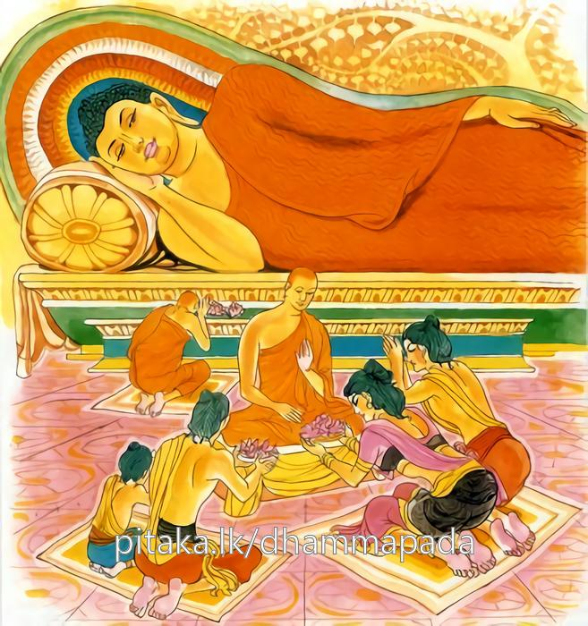

12-2 ශාක්ය පුත්ර උපනන්ද තෙරුන්ගේ කථා පුවත.
මෙම කතාව සද්ධර්ම සාගරයෙන් ද කියවන්න.
අත්තානමෙව පඨමං පතිරූපෙ නිවෙසයෙ
අථඤ්ඤමනුසාසෙය්ය න කිලිස්සෙය්ය පණ්ඩිතො.
පළමු කොට තමා ම සුදුසු ගුණයෙක්හි පිහිටුවන්නේ ය. (යමෙක් අපිස්බව් ආදි ගුණයෙකින් අනුනට ඔවා දෙනු කැමැත්තේ නම්, ඔහු විසින් පළමු කොට ඒ ගුණයෙහි පිහිටිය යුතු යි.) ඉක්බිත්තෙන් පරා හට (තමා පිහිටි ගුණයෙන්) අනුශාසන කරන්නේ ය. මෙසේ කරණ තැනැත්තේ නො කෙලෙසෙන්නේ ය (නො තැවෙන්නේ ය).

"අත්තානමෙව පඨමං” යන මේ ධර්ම දේශනය ශාස්තෲන් වහන්සේ දෙව්රම වැඩසිටියදී ශාක්ය පුත්ර උපනන්ද තෙරුන් නිමිති කරගෙන දෙසුහ. එම තෙරුන් ධර්ම දේශනයෙහි දක්ෂයෙක් විය. උන්වහන්සේගේ අප්පිච්ඡතාදී ගුණ කථා අසා බොහෝ දෙන තුන් සිවුරුවලින් පුජාකර ධූතාංග සමාදන්වූහ. ඔවුන් විසින් අතභරණ ලද පිරිකර ඔහුම ගත්තේය. ඔහු වස්කාලය ඇතුළත උපකට්ඨ (නියමිත) ජනපදයට වැඩම කළේය. ඉක්බිති එක් විහාරයක තරුණ සාමණේරවරු ව්යක්ත ධර්ම දේශකයෙක් නිසා මෙහි වස් සමාදන් වෙතැයි පැවසුහ. මෙහි කොපමණ වස් සිවුරු ලැබේදැයි විමසූවිට එක සළුවකැයි පැවසුයෙන් එහි පාවහන් තබා අනෙක් ආවාසයකට වැඩියේය.
දෙවන විහාරයේ දී කොපමණ සළු ලැබේදැයි විමසුවිට සළු දෙකක් යයි පැවසුවිට සැරයටිය එහි තැබීය. තුන්වැනි ආවාසයට ගොස් මෙහි කොතෙක් සළු ලැබේයි සළු තුනෙකැයි පැවසූවිට, දිය කළයක් තැබුවේය. හතරවැනි විහාරයට ගොස් කොපමණ ලැබේදැයි විමසා සළු හතරකැයි පැවසුවිට හොඳයි මෙහි වස් වසමියි. එහි වස් සමාදන්වී. ගිහි පැවිදි දෙපිරිසටම ධර්මදේශනා කළහ. ඔවුහු බොහෝ වස්ත්ර හා සිවුරු පූජා කළහ. ඔහු වස් සමාදන් වූ අනෙක් විහාරවලට ද ලියුම් යවා මගේ පරිෂ්කාර තැබූ හෙයින් වස්සාවාසිකය ලැබිය යුතුයයි ඒවා මට එවන්නැයි සියල්ල ගෙන්වාගෙන ගැලක තබා පුරවා යැවීය. මේ අතර එක් තරුණ භික්ෂු දෙනමක් සළු දෙකක් හා පලසක් ලැබ බෙදා ගැනීමට නොහැකිව වාදකරමින් සිට බෙදා දෙන්නැයි ඉල්ලා සිටියහ. ඔබම බෙදාගන්නැයි පැවසීය. ස්වාමීනි නොහැකිය ඔබවහන්සේ බෙදා දෙන්නැයි ඉල්ලා සිටියහ. එසේ නම් මගේ වචනය පිළිගන්නේද? එසේය සිටිමුයයි කීවිට එසේ නම් යහපතැයි කියා එම සාමණේර භික්ෂූන් දෙනමට සාටක දෙක දී මම ධර්මකථික නිසා පොරෝණය මට සුදුසු යයි කියා වටිනා කම්බිලිය ගෙන ගියේය විපිළිසරවූ තරුණ භික්ෂූන් බුදුන් වෙත ගොස් මේ කරුණු දැක්වූහ.
බුදුරජාණන් වහන්සේ මහණෙනි දැන් පමණක් නොව පෙර ද ඔබ විපිළිසර කළේ යයි අතීත කථාව ගෙනහැර දැක්වුහ. ඇත අතීතයේ අනුතීරවාරී ද ගම්භීරවාරි ද යන දියබල්ලෝ දෙදෙනෙක් මහත්වූ රතුපාට මාළුවෙක් ගෙන මට ඔළුව පෙදෙස වේවා ඔබට වල්ල පෙදෙස වේවායි වාදකරගනිමින් බෙදාගැනීමට නොහැකිව එක් සිවලෙක් දැක මෙසේ කීවාහුය. මාමේ මෙය අපට බෙදා දෙන්න එසේ පැවසුවිට මේ සිවලා මම රජුගේ විනිශ්චයකරුවෙකි. එහි බොහෝ වේලාවක් වාඩිවී සිට ශරීර සුවය සඳහා ඇවිදීමට ආවෙමි. දැන් වේලාවෙක් නෑ යනුවෙන් පැවසුවේය. එවිට දියබල්ලෝ දෙදෙනා මාමේ එසේ නොකරන්න. අපට බෙදා දෙන්නැයි පැවසුහ. එසේනම් මගේ වචනයේ පිහිටන්නේදැයි විමසා එය අපි ඔබේ වචනය පිළිගන්නෙමු යයි පැවසුවිට ඔහු යහපතැයි පවසා හිස සිඳ දමා එක පැත්තකට ද වලිගය තවත් පැත්තකටද දමා යමෙක් අනුතීරේ හැසිරේද ඔහුට නගුට ද ගම්භීරේ හැසිරේද ඔහුට හිසද වේවා. මම විනිශ්චය කළ නිසා මැද කොටසද වේවායි පැවසිය.
අනුතීරවාරිට නගුටයි, ගමභීරවාරිට හිසයි, ධර්ම විනිශ්චය දුන් තැනැත්තාට ශරීරයේ මැද කොටසයි.
මෙම ගාථාව කියා මාළුවාගේ මැද කොටස ගෙන නරියා ගියේය. ඔවුන් දෙදෙනා විපිළිසරට පත්ව බලමින් සිටියහ. බුදුහු මේ අතීත කථාව පෙන්වාදී ලෙස තොප අතීතයේ ද විපළිසරට පත්වීය. යනුවෙන් එම භික්ෂූන් දෙනමට පැහැදිලි කර දී උපනන්ද තෙරුන්ට ගර්හා කරන්නේ මහණෙනි අන් අයට අවවාද කරන්න විසින් පළමුව තමන් සුදුසු සාධාරණත්වයේ පිහිටා අන් අයට දෙවනුව අවවාද කළයුතුයයි පවසා මේ ගාථාව දේශනා කළහ.
නිවැරදි වී තමන් - සාදාරණව සිතමින්
අනුන් හට ඔවදන් - දීම උගතුම ගතියයි.
තමන් පළමුව ආදර්ශමත් බැව්හි පිහිටා සිට අන් අයට අවවාද කරන නුවණැති භික්ෂුව කිළිටි බවට පත් නොවන්නේය. ඔවාදෙනු පරහට තමා සම්මතෙහි පිහිටා සිට
එහි ප්තිරූපෙ නිවෙසයෙ - යනු සුදුසු ගුණයේ පිහිටීමයි. මෙසේ කියන ලදී. අල්පේච්ඡතා ආදී ගුණයන්හි මෙන්ම, අරියවංස ප්රතිපදාවේ පිහිටිය යුතුය. එසේ පිහිටා සිට අථ අඤඤං එම ගුණයෙහි, අනුසාසෙය්ය - තමන් වනාහි එවැනි ගුණයන්හි නොපිහිටා හුදෙක් ගුණයන්හි අනුන් පිහිටුවීමට අවවාද අනුශාසනා කරන්නේනම් අන් අයගෙන් නින්දා අපවාද ලැබ කිළිටිබවට පත්වේ. එසේ නොමැති පළමුව තමන් ගුණයෙහි පිහිටා අනුන්ට අනුශාසනා කරන්නෝ අනුන්ගේත් ප්රශංසාව ලබති. එහෙයින් කිලිස්සෙය්ය නුවණැත්ත තම ගුණයන්ට අන් අය පවසන නිසා කිළිටි නොවේමය. දේශනාවසානයේ ඒ භික්ෂු දෙනම සෝවාන් ඵලයෙහි පිහිටියහ. බොහෝ දෙනාට දේශනය සාර්ථක විය.